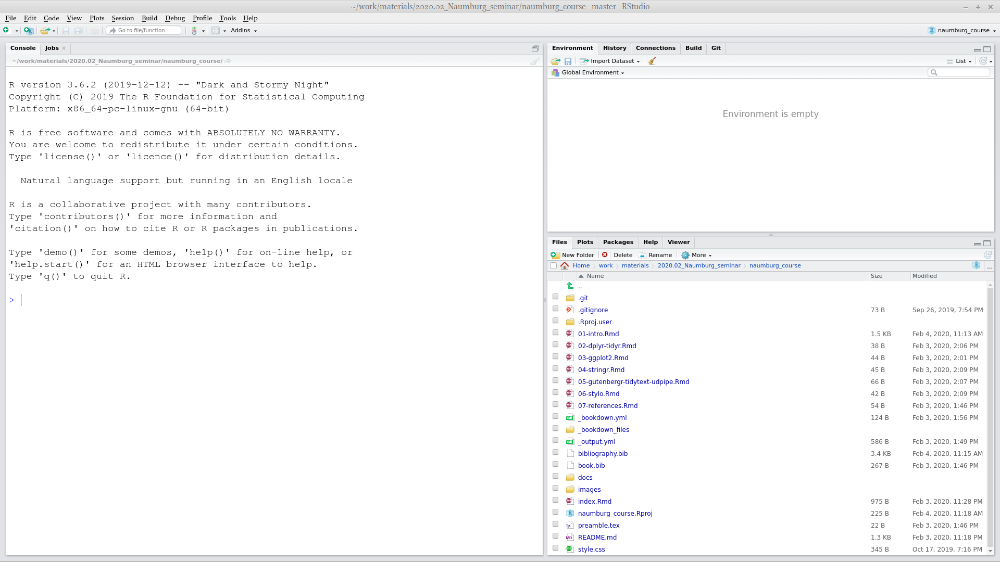
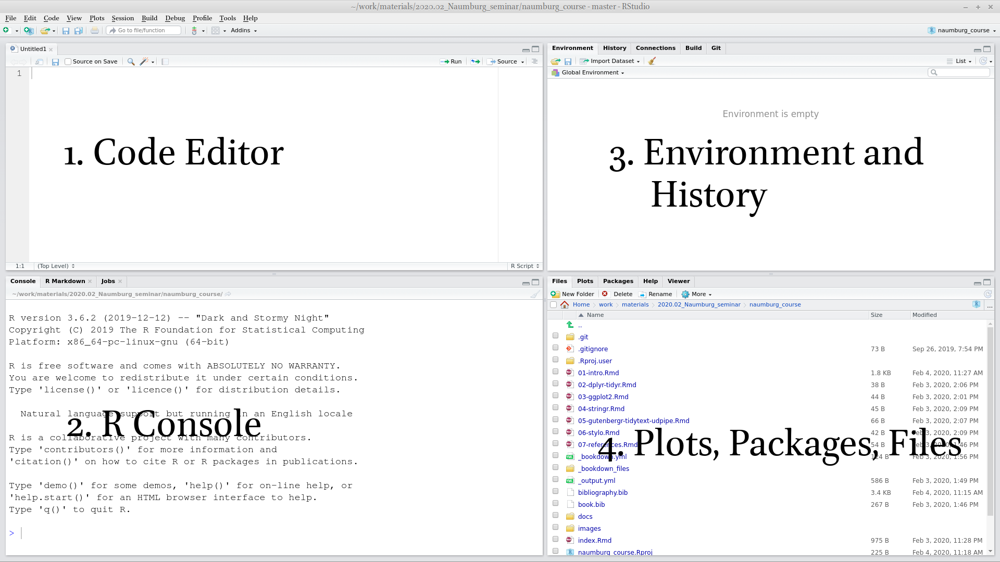

2 Введение
2.1 Наука о данных
2.1.1 Why data science?
Data science is a new field that is actively developing lately. This field merges computer science, mathematics, statistics, and it is hard to say how much science in data science. In many scientific fields a new data science paradigm arises and even forms a new sub-field:
- Bioinformatics
- Crime data analysis
- Digital humanities
- Data journalism
- Data driven medicine
- …
There are a lot of new books “Data Science for …”:
- psychologists (Hansjörg 2019)
- immunologists (Thomas and Pallett 2019)
- business (Provost and Fawcett 2013)
- public policy (Brooks and Cooper 2013)
- fraud detection (Baesens, Van Vlasselaer, and Verbeke 2015)
- …
Data scientists need to be able to:
- gather data
- transform data
- visualize data
- create a statistical model based on data
- share and represent the results of this work
- organize the whole workflow in a reproducible way
2.1.2 Why R?
R (R Core Team 2019) is a programming language with a big infrastructure of packages that helps to work in different fields of science and computer technology.
There are several alternatives:
- Python (VanderPlas 2016; Grus 2019)
- Julia (Bezanson et al. 2017)
- bash (Janssens 2014)
- java (Brzustowicz 2017)
- …
You can find some R answers here:
- R for data science (Wickham 2016), it is online
- R community
- stackoverflow
- any search engine you use
- …
2.1.3 Основные этапы исследования
2.2 Введение в RStudio
R is the programming language. RStudio is the most popular IDE (Integrated Development Environment) for R language.
When you open RStudio for the first time you can see something like this:

When you press  button at the top of the left window you will be able to see all four panels of RStudio.
button at the top of the left window you will be able to see all four panels of RStudio.

2.3 R как калькулятор
Lets first start with the calculator. Press in R console
## [1] 11## [1] -550## [1] 27## [1] 3## [1] 9.5## [1] 9.5## [1] 3.141593Remainder after division
## [1] 1So you are ready to solve some really hard equations (round it four decimal places):
\[\frac{\pi+2}{2^{3-\pi}}\]
2.5 Functions
The most important part of R is functions: here are some of them:
## [1] 2## [1] 5## [1] 1## [1] -1## [1] 14## [1] 135## [1] -0.841471Each function has a name and zero or more arguments. All arguments of the function should be listed in parenthesis and separated by comma:
## [1] 3.141593## [1] 3.14Each function’s argument has its own name and serial number. If you use names of the function’s arguments, you can put them in any order. If you do not use names of the function’s arguments, you should put them according the serial number.
## [1] 3.14## [1] 3.14## [1] 3.14## [1] 3.14## [1] 3.14## [1] 2There are some functions without any arguments, but you still should use parenthesis:
## [1] "2020-09-02"## function ()
## as.Date(as.POSIXlt(Sys.time()))
## <bytecode: 0x5f7a9af41820>
## <environment: namespace:base>Each function in R is documented. You can read its documentation typing a question mark before the function name:
Explore the function log() and calculate the following logarithm:
\[\log_3(3486784401)\]
2.6 Variables
Everything in R can be stored in a variable:
 As a result, no output in the Console, and a new variable x appear in the Environment window. From now on I can use this new variable:
As a result, no output in the Console, and a new variable x appear in the Environment window. From now on I can use this new variable:
## [1] 22## [1] 29All those operations don’t change the variable value. In order to change the variable value you need to make a new assignment:
The fast way for creating <- in RStudio is to press Alt - on your keyboard.
It is possible to use equal sign = for assignment operation, but the recommendations are to use arrow <- for the assignment, and equal sign = for giving arguments’ value inside the functions.
For removing vector you need to use the function rm():
## Error in eval(expr, envir, enclos): object 'x' not found2.6.1 Variable comparison
It is possible to compare different variables
## [1] FALSE## [1] TRUE## [1] TRUE## [1] TRUE## [1] TRUE## [1] FALSEOperator ! can work by itself changing logical values into reverse:
## [1] FALSE## [1] TRUE2.7 Vector
An R object that contains multiple values of the same type is called vector. It could be created with the command c():
## [1] 3.000000 0.000000 3.141593 23.400000 -53.000000## [1] "Kraków" "Warszawa" "Cieszyn"## [1] FALSE FALSE TRUE## [1] 2 3 4 5 6 7For the number sequences there is an easy way:
## [1] 1 2 3 4 5 6 7 8 9 10## [1] 3 2 1 0 -1 -2 -3 -4 -5From now on you can understand that everything we have seen before is a vector of length one. That is why there is [1] in all outputs: it is just an index of elements in a vector. Have a look here:
## [1] 1 2 3 4 5 6 7 8 9 10 11 12 13 14 15 16 17 18 19 20 21 22 23 24 25
## [26] 26 27 28 29 30 31 32 33 34 35 36 37 38 39 40 41 42 43 44 45 46 47 48 49 50
## [51] 51 52 53 54 55 56 57 58 59 60## [1] 60 59 58 57 56 55 54 53 52 51 50 49 48 47 46 45 44 43 42 41 40 39 38 37 36
## [26] 35 34 33 32 31 30 29 28 27 26 25 24 23 22 21 20 19 18 17 16 15 14 13 12 11
## [51] 10 9 8 7 6 5 4 3 2 1There is also a function seq() for creation of arithmetic progressions:
## [1] 1 2 3 4 5 6 7 8 9 10 11 12 13 14 15 16 17 18 19 20## [1] 1 2 3 4 5 6 7 8 9 10 11 12 13 14 15 16 17 18 19 20## [1] 2 15 28 41 54 67 80 93
Use the argument length.out of function seq() and create an arithmetic sequence from \(\pi\) to \(2\pi\) of length 50.
There are also some built-in vectors:
## [1] "a" "b" "c" "d" "e" "f" "g" "h" "i" "j" "k" "l" "m" "n" "o" "p" "q" "r" "s"
## [20] "t" "u" "v" "w" "x" "y" "z"## [1] "A" "B" "C" "D" "E" "F" "G" "H" "I" "J" "K" "L" "M" "N" "O" "P" "Q" "R" "S"
## [20] "T" "U" "V" "W" "X" "Y" "Z"## [1] "January" "February" "March" "April" "May" "June"
## [7] "July" "August" "September" "October" "November" "December"## [1] "Jan" "Feb" "Mar" "Apr" "May" "Jun" "Jul" "Aug" "Sep" "Oct" "Nov" "Dec"2.7.1 Vector coercion
Vectors are R objects that contain multiple values of the same type. But what if we merged together different types?
## [1] "1" "34"## [1] 1 1## [1] "TRUE" "34"It is clear that there is a hierarchy: strings > double > logical. It is not universal across different programming languages. It doesn’t correspond to the amount of values of particular type:
## [1] "1" "2" "3" "34"## [1] 1 1 0 0The same story could happen during other operations:
## [1] 62.7.2 Vector operations
All operations, that we discussed earlier, could be done with vectors of the same length:
## [1] 7 9 11 13 15## [1] -5 -5 -5 -5 -5## [1] 6 14 24 36 50There are operations where the vector of any length and vector of length one is involved:
## [1] 8 9 10 11 12## [1] -6 -5 -4 -3 -2## [1] 0.1428571 0.2857143 0.4285714 0.5714286 0.7142857There are a lot of functions in R that are vectorised. That means that applying this function to a vector is the same as applying this function to each element of the vector:
## [1] 0.8414710 0.9092974 0.1411200 -0.7568025 -0.9589243## [1] 1.000000 1.414214 1.732051 2.000000 2.236068## [1] 5 4 3 2 1 0 1 2 32.7.3 Indexing vectors
How to get some value or banch of values from a vector? You need to index them:
## [1] 23.4## [1] "Warszawa"It is possible to have a vector as index:
## [1] 3 0## [1] "Kraków" "Cieszyn"It is possible to index something that you do not want to see in the result:
## [1] "Kraków" "Cieszyn"## [1] 0.000000 3.141593 -53.000000It is possible to have other variables as an index
## [1] 3.141593 0.000000## [1] "Cieszyn" "Warszawa"It is possible to index with a logical vector:
## [1] 3.000000 3.141593 23.400000That means that we could use TRUE/FALSE-vector produced by comparison:
## [1] 3.000000 3.141593 23.400000It works because x > 2 is a vector of logical values:
## [1] TRUE FALSE TRUE TRUE FALSEIt is possible to use ! operator here changing all TRUE values to FALSE and vice versa.
## [1] 0 -53
How many elements in the vector g if expression g[pi < 1000] does not return an error?
2.7.4 NA
Sometimes there are some missing values in the data, so it is represented with NA
## [1] NA## [1] 1 NA 9## [1] "Kraków" NA "Cieszyn"## [1] TRUE FALSE NAIt is possible to check, whether there are missing values or not
## [1] FALSE TRUE FALSE## [1] FALSE FALSE FALSESome functions doesn’t work with vecotors that contain missed values, so you need to add argument na.rm = TRUE:
## [1] NA## [1] 5## [1] 1## [1] 9## [1] 5## [1] 1 9References
Baesens, Bart, Veronique Van Vlasselaer, and Wouter Verbeke. 2015. Fraud Analytics Using Descriptive, Predictive, and Social Network Techniques: A Guide to Data Science for Fraud Detection. John Wiley & Sons.
Bezanson, Jeff, Alan Edelman, Stefan Karpinski, and Viral B Shah. 2017. “Julia: A Fresh Approach to Numerical Computing.” SIAM Review 59 (1): 65–98.
Brooks, Harvey, and Chester L Cooper. 2013. Science for Public Policy. Elsevier.
Brzustowicz, Michael R. 2017. Data Science with Java: Practical Methods for Scientists and Engineers. O’Reilly Media, Inc.
Grus, Joel. 2019. Data Science from Scratch: First Principles with Python. O’Reilly Media, Inc.
Hansjörg, Neth. 2019. Data Science for Psychologists. self published.
Janssens, Jeroen. 2014. Data Science at the Command Line: Facing the Future with Time-Tested Tools. O’Reilly Media, Inc.
Provost, Foster, and Tom Fawcett. 2013. Data Science for Business: What You Need to Know About Data Mining and Data-Analytic Thinking. O’Reilly Media, Inc.
R Core Team. 2019. R: A Language and Environment for Statistical Computing. Vienna, Austria: R Foundation for Statistical Computing. https://www.R-project.org/.
Thomas, Niclas, and Laura Pallett. 2019. Data Science for Immunologists. CreateSpace Independent Publishing Platform.
VanderPlas, Jake. 2016. Python Data Science Handbook: Essential Tools for Working with Data. O’Reilly Media, Inc.
Wickham, Hadley. 2016. Ggplot2: Elegant Graphics for Data Analysis. Springer-Verlag New York. https://ggplot2.tidyverse.org.
2.4 Comments
Any text after a hash
#within the same line is considered a comment.